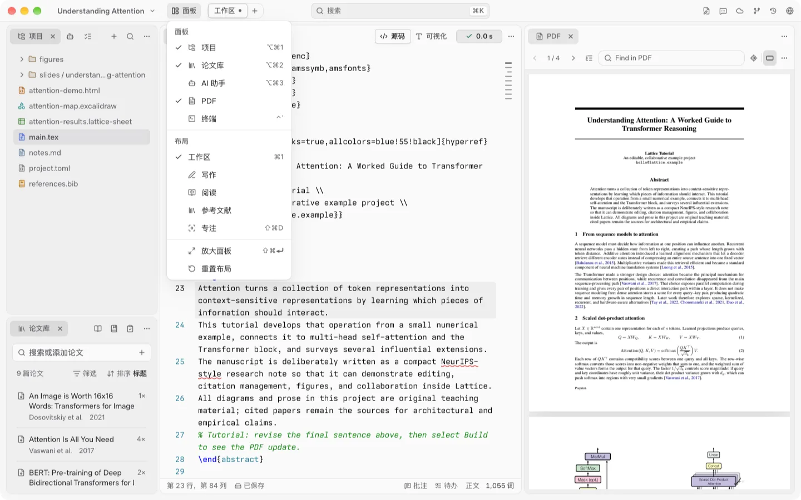

面板与工作区
面板
窗口里的一切都是面板：项目、论文库、AI 助手、PDF、终端，以及历史、批注、Overleaf、待办、投稿检查等工具。标题栏的 面板 菜单可以显示或隐藏前五个；工具从标题栏上各自的按钮（历史、批注、Overleaf、Git）或命令面板（⌘K）打开，例如 待办 和 投稿检查。标题栏显示哪些工具按钮，在 设置 › 外观 › 标题栏工具 中选择。

- 拖动面板的标签，可以把它停靠到任何位置：另一个面板的旁边、上方、下方，或者作为它所在组的一个标签。
⌘⌥1项目、⌘⌥2论文库、⌘⌥3AI 助手、⌃`终端，用来显示或隐藏这些面板。⌘⇧↩（放大面板）最大化当前面板，再按一次恢复布局。- 专注（
⌘⇧D）只留下编辑器。 - 面板菜单中的 重置布局 可以找回关掉的任何面板。
面板菜单的 布局 下列出你的工作区和三个现成的布局：写作、阅读 和 参考文献。
工作区
工作区是保存下来的面板布局。它们以标签形式排在标题栏里，用 ⌘1 到 ⌘9 切换。
- 新建：点工作区标签旁的 +。新工作区从屏幕上当前的布局开始；输入名称后按回车。
- 保存修改：调整面板后，工作区标签上会出现一个圆点。右键标签，选择 保存到工作区 或 还原布局。
- 重命名：双击标签，或按 F2。
- 复制一份：复制当前工作区，并让你给副本起名。
- 调整顺序：拖动标签，或使用 左移 和 右移。
删除工作区
右键点击工作区的标签，选择 删除工作区。如果右键打不开菜单（某些触控板设置下会这样），选中标签后按 ⇧F10。删除后弹出的通知里有 撤销，可以把它找回来。只剩一个工作区时不能删除。

窗口太窄放不下标签时，工作区会折叠成一个菜单，操作相同。